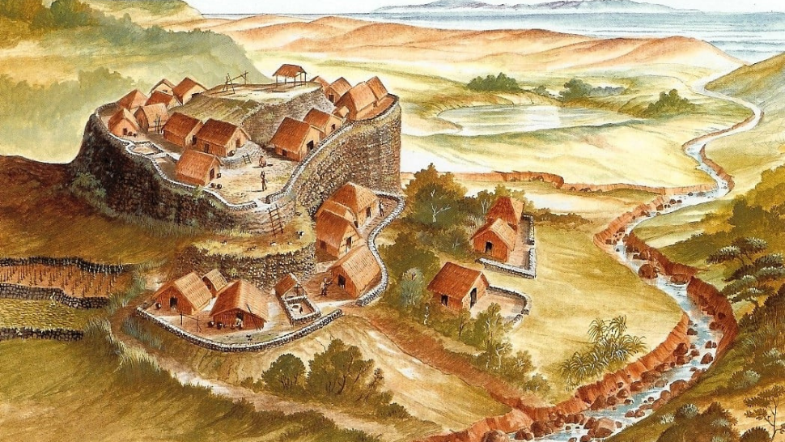
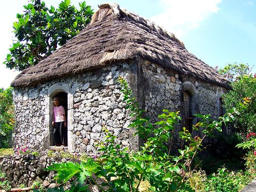

Batanes is the northernmost and smallest province of the Philippines, located approximately 190 kilometers north of Luzon and only about 190 kilometers south of Taiwan. It consists of three main inhabited islands — Batan, Sabtang, and Itbayat — along with several smaller uninhabited islets.
Despite its small size, Batanes is one of the most remarkable provinces in the country. Its dramatic scenery, unique architecture, and rich cultural heritage set it apart from any other destination in the Philippines.
The Ivatans are the indigenous people of Batanes. They are known for their honesty, resilience, and strong sense of community. Their ancestors are believed to have migrated from Taiwan thousands of years ago, which makes them genetically and culturally distinct from most other Filipino groups.
The Ivatan language is part of the Austronesian language family and is still widely spoken in Batanes today alongside Filipino and some English.
Batanes was officially incorporated into the Philippines during the Spanish colonial period in 1783. The Spanish built churches and fortifications on the islands, many of which are still standing today as cultural and historical landmarks.
During World War II, Japanese forces briefly occupied the islands. Batanes' remote location helped protect much of its original culture and architecture from modernization, keeping the province well-preserved to this day.
Year Batanes became a Spanish province
Batan, Sabtang, and Itbayat are the main inhabited islands
Approximate total population of the province
Capital town and main entry point into Batanes

One of the most recognizable features of Batanes is its traditional stone houses. These homes are built using limestone and cogon grass roofs, designed specifically to withstand the strong typhoons and winds that regularly hit the province.
The stone houses of Sabtang Island, in particular, are recognized as a National Cultural Treasure and are still inhabited today by local families. Visiting these villages gives travelers a rare chance to see a centuries-old way of life still being lived.
Everything about Ivatan life — their stone houses, their preserved foods, their traditional clothing — was designed to survive the harsh weather conditions of Batanes. The province receives some of the strongest typhoons in the Philippines, yet the Ivatan people have thrived here for thousands of years.